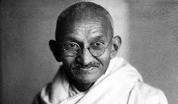

The Calcutta Boys' School is a Christian Minority Anglo-Indian
English Medium day school under the control and authority of the Bengal Regional Conference of the Methodist Church in India, managed by the Calcutta Christian Schools Society (Regd.). Very much Indian and very much Christian, we therefore expect each parent or guardian to enthusiastically co-operate in our total Christian programme for the training of each child. This means the practice, the cultivation
and the study of those:
1. Moral and Spiritual values which are fundamental for the building of an all true Character in each of us.
2. Social Values which make for good Citizenship, not only within the small limits of the School and its compound but also in the greater life of the social community beyond the School. The School day ends at 1.30p.m. but not its Discipline nor its Idealism
3. Cultural Values such as Politeness, Neatness, Cleanliness, and Punctuality etc., which characterise a gentleman.
4. Constructive Attitudes that lead to a great career and save the child from being just another wage earner in the economy of life.
PROFILE
The School is affiliated to the Council for the Indian School Certificate Examinations, New Delhi and conducts the Indian Certificate of Secondary Education Examination (ICSE) and the Indian School Certificate Examination (ISC). Classes Play Group to VIII follow a syllabus (course of study) recommended by the Inter State Board of Anglo-Indian Education and by the Council for the ISC Examinations, New Delhi.
The School is recognised by the Government of West Bengal through the Deputy Director of School Education. Anglo-Indian Schools.
All donations made to the Calcutta Boys School qualify for deduction u/s 80G (5) of the Income Tax Act, 1961 vide Registration Number. AAATC6652NF20111 dated 06-04-2022, issued by the Director of Income Tax (Exemption), Kolkata.
We would like to express our special thanks of gratitude to our history teacher, Mrs. Venessa Francis, who gave us the golden opportunity to work on this project.
We would also like to express our gratitude to our school principal, Mr. Raja McGee, wholeheartedly.
This project
would not have been possible without the immense support of our friends and teachers.
The coordination that is
seen among us is really appreciated. Everyone cooperated well.
The support and time given from each family
is considerable. Therefore, in a way, our parents has also helped us in this project.
Thanking CBS for this
great moment, let us proceed with the history exhibition.
Every year, at this point of November or December a history exhibition is held.
Students from every class
starts participating in this exhibition.
While the exhibition is going on, some students build models,
some make charts, some act and some other students narrates and explains their whole project to the judges.
In CBS a number of events are held every year including science exhibitions,
sports, carnival and stage performances(acting, singing, dancing, etc).
Out of all these, the History exhibition touches everyone's heart. This year, we are focusing ont the
With the arrival of Mahatma Gandhi in the Indian Independence struggle,
there have been led, many significant movements which are important to be read for IAS Exam.
The famous satyagraha movement includes - Champaran Satyagraha, Ahmedabad Mill Strike and Kheda
Satyagraha.
